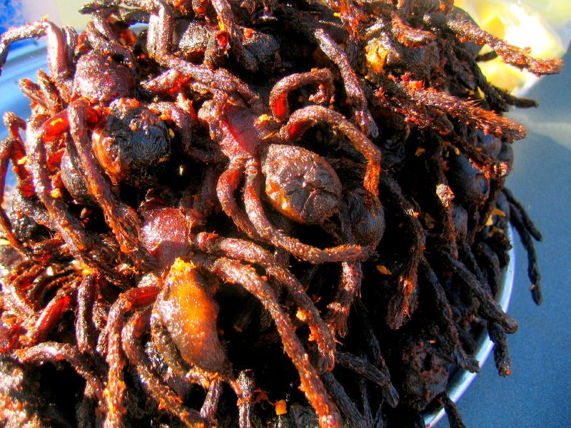

Deep Fried Tarantula Spider

Spiders, specifically Tarantulas were not really considered delicacy until 1970s. The tradition started back in mid-1970s after Cambodia went under Khmer Rouge communist regime.
It was because Khmer Rouge regime that Tarantulas eventually became a primary food source among the Cambodians and the arachnids quickly became popular among millions of people worldwide. The popularity started somewhere in 1990s.
Ingredients Needed
- 2 cups canola or vegetable oil
- 2 frozen adult Texas brown, Chilean rose, or similar-sized tarantulas, thawed
- 1 cup tempura batter
- 1 teaspoon smoked paprika
Step by step
- In a deep saucepan or deep-fat fryer, heat the oil to 350°F.
- With a sharp knife, sever and discard the abdomens from the two tarantulas. Singe off any of the spider's body hairs with a crème brûlée torch or butane cigarette lighter.
- Dip each spider into the tempura batter to thoroughly coat. Use a slotted spoon or your hands to make sure each spider is spread-eagled (so to speak) and not clumped together before dropping it into the hot oil.
- Deep-fry the spiders, one at a time, until the batter is lightly browned, about 1 minute. Remove each spider from the oil and place it on paper towels to drain.
- Use a sharp knife to cut each spider in two lengthwise. Sprinkle with the paprika and serve. Encourage your guests to try the legs first and, if still hungry, to nibble on the meat-filled mesothorax, avoiding the spider's paired fangs, which are tucked away in the head region
Back to Home